Context- and Task-Oriented Communication (CTO Com)
ERC Starting Grant Project May 2017 - April 2022
Below we describe our advances on context- and task-oriented communcation systems that we achieved in our ERC project CTO Com. A complete list of all people who have contributed to these advances can be found here, and a complete list of all publications produced during the project can be found here (ordered by theme).
Cache-Aided Systems

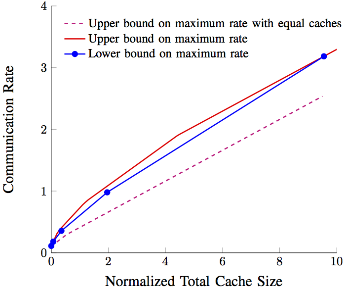 |
A large part of our internet consumption
concerns only few popular videos and newspapers that can well be predicted in function of the geographical area and the time of the day. Putting in place a system of area-wide distributed caches where popular contents can be pre-stored, seems necessary to satisfy future demands in rates, delays, and energy consumption. Previous results showed that in the presence of cache memories, smart placement and coding techiques can yield significant performance gains. We extended these works to the more practical scenario with noisy communication channels and we were the first group to show that further gains are possible by employing techniques from joint source-channel coding. Intuitively, the gains are achieved because through joint source-channel coding users cannot only profit from their own cache memories but also from other users cache memories.
Our proposed piggyback codes can improve the caching-gains by up to 40% over previous codes. As we showed, the performance remains almost unchanged also under secrecy requirements, i.e., when the communication needs to be kept secret from external eavesdroppers. We further showed that the gains provided by joint source-channel coding depend on the assignment of the cache memories across the users, and a smart cache-allocation allows to achieve even larger gains compared to traditional caching implementations. Our findings where validated through real testbed measurements. To this end, we designed a natural and elegant implemention of piggyback coding using Polar codes and an extended GRASP graph colouring algorithm combined with a bipartite matching algorithm. The latter is required to combine transmissions to cache-aided users with transmissions to cache-free users, a feature that can be implemented in our piggyback coding schemes but is completely absent in Maddah-Ali and Niesen's standard coded caching schemes and their variations. We also derived the first information-theoretic converse result for noisy cache-aided broadcast channels. These bounds also provided improved bounds for the classical coded-caching setup based on noise-free channels. |
Optical Wireless/Visible Light Communication
|
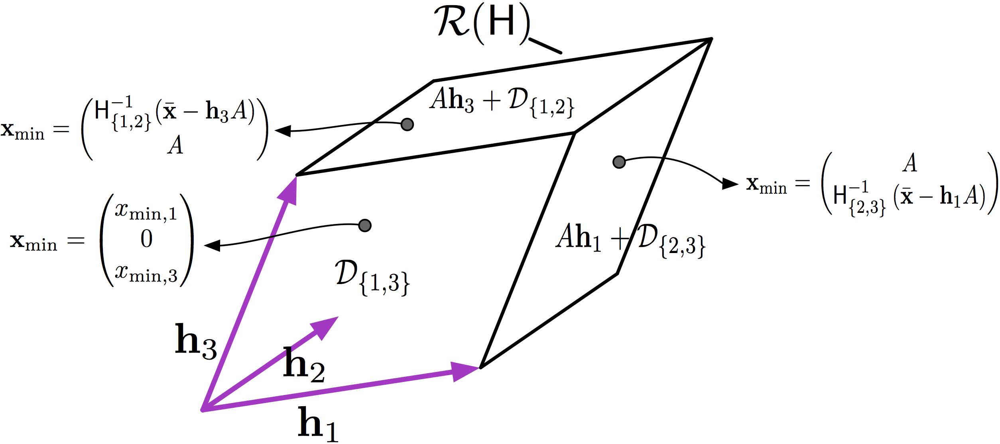 |
Optical wireless communication is a form of communication in which visible, infrared, or ultraviolet light is transmitted in free space (air or vacuum) to carry a message to its destination. Recent works suggest that it is a promising solution to replacing some of the existing radio-frequency
(RF) wireless communication systems in order to prevent future rate bottlenecks. Particularly attractive are simple intensity-modulation-direct-detection (IM-DD) systems. In such systems, the transmitter modulates the intensity of optical signals coming from light emitting diodes (LEDs) or laser diodes (LDs), and the receiver measures incoming optical intensities by means of photodetectors. The electrical output
signals of the photodetectors are essentially proportional to the incoming optical intensities, but are corrupted by thermal noise of the photodetectors, by random intensity fluctuations inherent to low-cost LEDs and LDs, and shot noise caused by ambient light.
Particularly interesting in this context, both from a theoretical as well as from a practical point of view, are multi-antenna systems with more transmit antennas than receive antennas. The practical importance stems from the fact that many lighting systems (especially in the public space) are already equipped with multiple LEDs and can thus naturally serve as transmit antennas. In contrast, receivers typically have to be specially equipped with photo detectors for the purpose of the communcation. To reduce installation costs, it is thus preferable to have only a small number of photo detectors. The theoretical interest of multi-antenna systems stems from their non-traditional power constraints, which renders the popular beamforming signaling approach suboptimal. In our works we determined minimum-energy signaling methods both for multiple-input single-output (MISO) and for multiple-input multiple-output (MIMO) free-space optical channels. Remarkably, these minimum-energy signaling methods resemble enhanced versions of antenna index-modulation (spatial modulation), where non-selected antennas are however set to either 0 or full power according to a precise algorithm. Our results on minimum-energy signaling allowed us to obtain more efficient modulation schemes for these channels, and were a key tool for deriving tight bounds on the capacity of these channels and to determine the asymptotic capacity-behaviours in the low and high signal-to-noise ratio regimes. In a subsequent work, we showed that performances close to capacity can be achieved with only few feedback bits describing which antennas have to be set to 0 and which to full power. Any additional feedback information related to the channel state thus provides only moderate advantage. Currently we are investigating the influence of both electrical and optical input power constraints on the capacity region. We showed for single-input single-output (SISO) channel that in most cases only one of the two constraints is stringent, which implies the optimality of simpler systems that are designed for only one of these constraints. |
Mixed-Delay Traffic
|
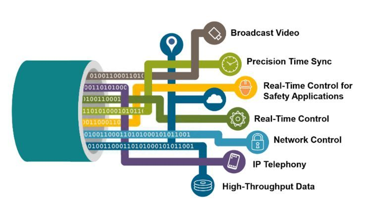 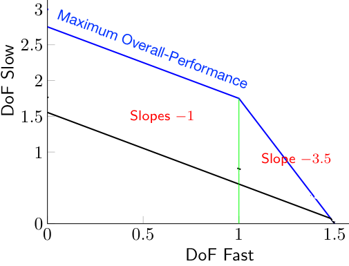 |
Modern wireless networks have to accommodate a heterogeneous traffic composed of delay-sensitive and delay-tolerant data. For example, communication for remote surgery or other realtime control applications have much more stringent delay constraints than communication of standard data. In 5G and future 6G network, ultra-reliable low-latency communication (URLLC) used for control applications is scheduled on the same frequency band as the enhanced mobile broadband (eMBB) communication, which provides users with standard data, for example related to video streaming. The standard scheduling approach of simply interrupting the traditional communication whenever low-latency communication is to transmitted degrades the overall-system performance, because low-latency communication cannot be conveyed as efficiently as standard data.
In our research mitigated this degradation partially or even by designing joint communication schemes for both standard and low-latency communications. Our primary focus has been on cooperative multi-user and multi-basestation (BS) networks where the various users and/or BSs can cooperate with each other. In networks were both the transmitters and the receivers can cooperate, our schemes even approach the ideal overall system-performance as if only standard data was communicated. The stringent delay-constraints on the low-latency communication thus do not harm the sum-rate that our joint coding schemes can achieve. As we show with information-theoretic converse proofs, such an ideal performance is impossible in the considered networks when only transmitters or only receivers can cooperate. The described findings hold for various cellular network models such as Wyner's linear and hexagonal models as well as sectorized networks were cells are partitioned into three sectors by means of directional antennas. Low-latency control communication is often very bursty, because triggered by events of nature or user behaviour. In our most recent line of work we analyze the influence of the burstiness of the arrivals. We show that also in such a setup, our proposed joint coding schemes for standard and low-latency communication significantly outperforms traditional scheduling algorithms. Though the burstiness is known to harm communication performance in general, our joint schemes proved to be rather robust also to this nuisance.
|
|
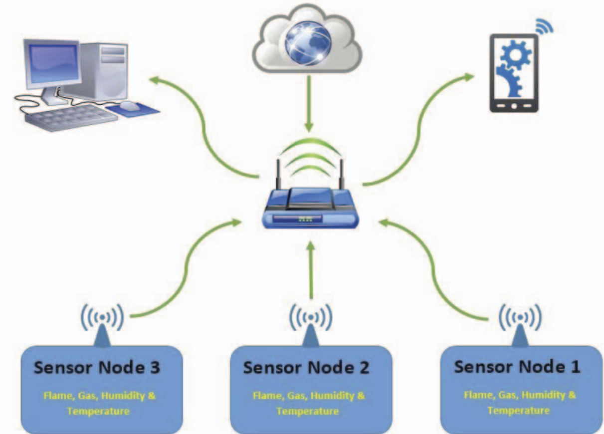 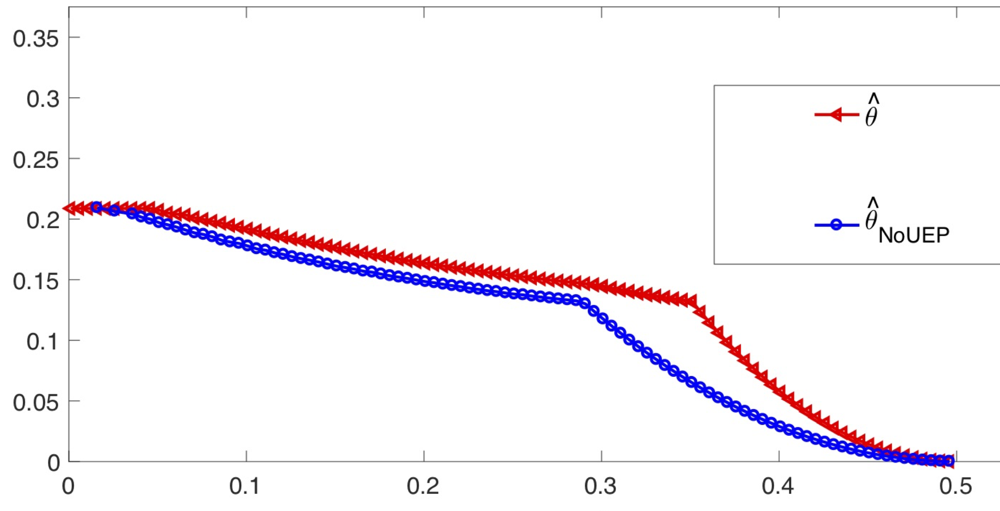 |
Distributed decision systems are one of the main building blocks of the Internet of Things (IoT) and find applications in a wide range of domains such as health monitoring, infrastructure maintanance, natural catastrophy alarm systems, etc. In all these systems, a set of distributed sensors performs measurements and sends information about these observations to other sensors or directly to the final decision center. The goal of the communication is thus not the simple transmission of data, but to enable the final decision centers to correctly decide on the hypothesis underlying the system.
Our focus in this project is in determining the fundamental performance limits of distributed decision systems and to propose optimal coding and testing schemes achieving these limits. We mostly focus on binary hypothesis testing problems and on the goal of maximizing the exponential-decay rate of the probability of miss detection under a constraint on the exponential-decay rate of the probability of false alarm.
We considered both the canonical single-sensor single-decision problem, as well as more complicated models with multiple sensors, sensors that can communicate to the decision centers only over multiple hops, or multiple decision centers. For the single-sensor and single-decision center problem we were the first to consider arbitrary hypothesis tests and arbitrary channel laws for the communication from the sensor to the decision center. We proved in particular that the hypothesis testing performance of such systems not only depends on the capacity of the communication channels, as preliminary results by other authors suggested, but on the precise transition law of the channel. Moreover, employing unequal-error protection (UEP) mechanisms allow to achieve a significant gain in the testing-performance. Other significant gains can be attained through an adaptive usage of the resources, in case the constraint is on the expected usage of the resources (bandwidth) and not on the maximum usage. As we show through information-theoretic converse results, a simple coding and testing scheme where the sensor occupies only a negligible amount of resources in well-defined events, achieves largest type-II error exponents. This result extends also to systems with multiple sensors, multiple decision centers, and multi-hop systems where some of the sensors cannot directly communicate with the decision centers but communication has to be relayed through other sensors. For multi-hop systems we had already shown in a previous work that optimal performance can only be achieved if the relaying sensors forward their tentative decisions and these tentative decisions are considered as vetos by subsequent sensors. For systems with multiple decision centers we illustrated a performace tradeoff between the decisions at the various centers, which is caused by the shared communication resources to all centers. Surprisingly, this tradeoff can be mititaged by exploiting the sensor's tentative decisions and to accordingly prioritize one of the decision centers according. For certain communication links the tradeoff mitigation is perfect, whereas for others a small tradeoff remains because the decision centers can misunderstand the tentative decision and thus the prioritization. |
Distributed Computing Systems
|
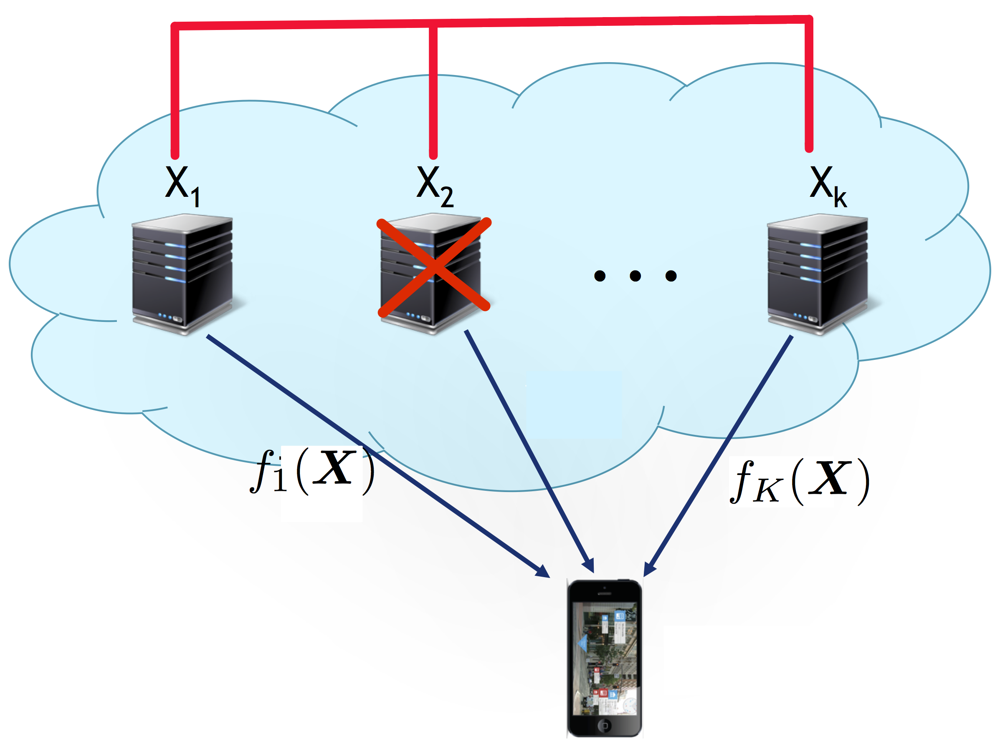 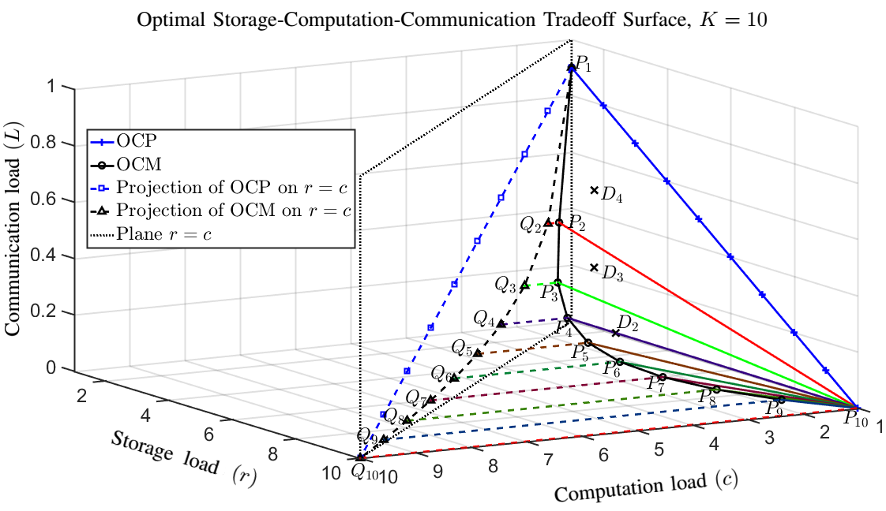 |
Different computing architectures have been proposed to distribute heavy computation tasks such as machine learning algorithms. In MapReduce systems, for example, the data is distributed across nodes, and in a first map-phase the nodes compute intermediate values which they exchange with each other during the subsequent reduce phase. Each node finally recovers a subset of the desired computation results by applying so called reduce functions to its collected intermediate values.
Li et al. showed that the communication requirements of MapReduce systems can significantly be reduced if files are stored multiple times across different nodes in the map phase and multicast opportunities are exploited during the shuffle phase. In fact, the coded distributed computing (CDC) scheme they proposed achieves an optimal tradeoff between the required storage- and communication-loads. In our works we refined the CDC scheme so as to achieve a three-dimensional tradeoff between the optimal storage, communication, and computation loads. As we further showed in our works, the optimal two-dimensional and three-dimensional tradeoffs can only be achieved with an exponential number of files, which might not be the case in practical implementations. To mitigate this bottleneck, we proposed suboptimal schemes that require only a significantly smaller number of files and still well-approach the optimal storage, communication, computationg tradeoff curve. Our schemes are based on computational placement-delivery arrays (CPDA), which is a subclass of PDAs as introduced for caching systems, and on a general framework on how to convert CPDAs to coded computing schemes A serious problem in distributed computing systems are nodes that straggle with calculating their intermediate values. In a traditional approach, a single straggling node would delay the results of all computations. To prevent this delay, data is distributed accross more nodes, and the shuffle and reduce phases are started as soon as a sufficient number of nodes has terminated their computations. For such a system with straggling nodes we characterized the fundamental two-dimensional tradeoff between storage and communication loads, and we again showed that this fundamental tradeoff can only be achieved using an exponentially large number of files. Using computational-PDA constructions we showed that points close to the fundamental tradeoff can be achieved with schemes that also work with a small number of files, thus allowing for a practical implementation of our straggler-robust schemes. |
Coordination and Sensing
|
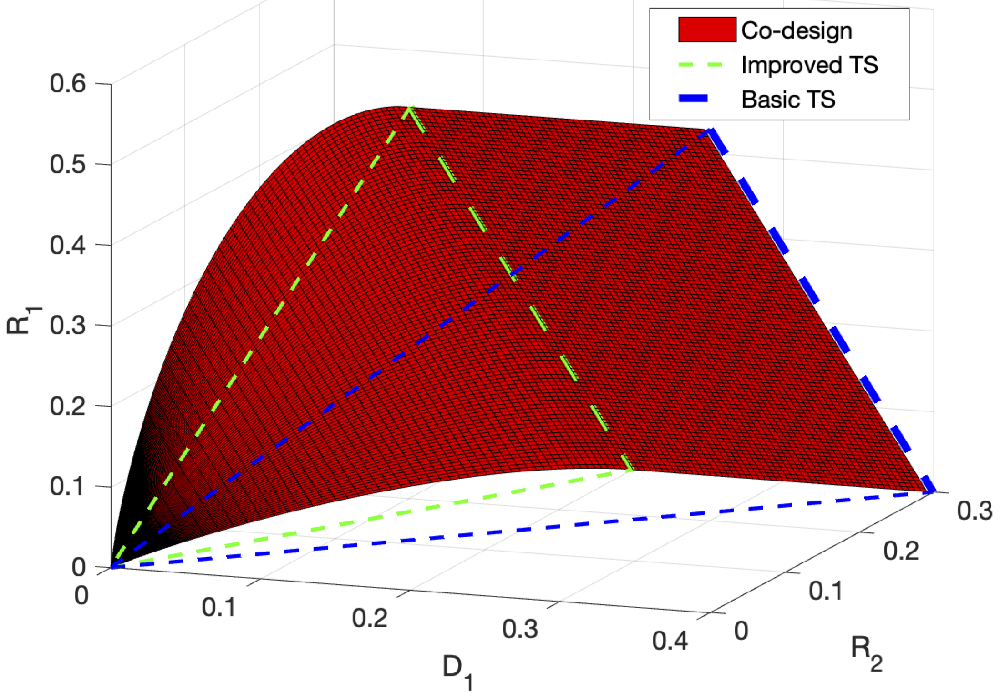 |
Important applications require devices to coordinate their actions with each other and with a random state so as to achieve a common goal. For example, in autonomous navigation systems, cars have to coordinate their speed and directions with each other and according to external obstacles. Another example are production sites of traditional and alternative energies that have to coordinate their energy productions with the consumptions of the users so as to ensure stability of the power grid. In these applications, communication serves the task to coordinate the actions at the various terminals. The information-theoretic community has studied the set of distributed control actions that can be induced over given communication links. In a previous work we extended these results to state-dependent channels under various causality constraints. We further focused on implicit communication, where devices communicate through their actions and by observing each others' actions instead of over special dedicated communication channels. Our results are thus particularly relevant for crowded networks with scarce communication resources such as 5G networks. |
Age of Information
|
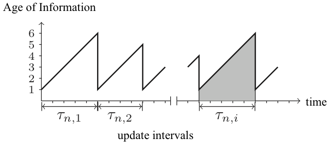 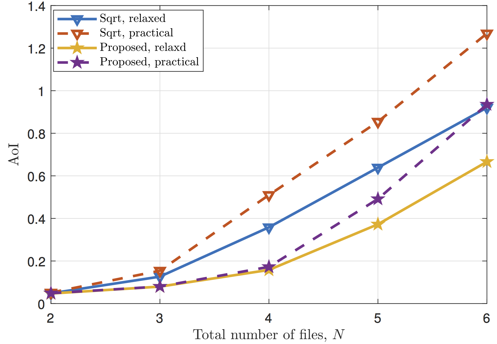 |
A variety of applications require timely updates. For example, mirror systems which store copies of centralized data-base entries, distributed news storage systems, or web-crawling services, deal with time-varying contents and consequently have to decide when to update these contents. Our collaborator R. Yates has introduced the notion of Age of Information to measure the freshness of the contents: it is the time of each content file since it has been updated the last time.
In this project we considered a single-server system that generates the contents (for example the centralized data base or the newspaper) and of one or multiple caches with dedicated links to the server. Various users demand contents from the caches. The goal of the caches is to update their contents from the server so as to minimize the Age of Information of all the demanded files. Due to the limited communication rate on the server-cache links, the caches have to come up with smart scheduling schemes. |